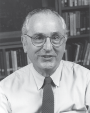

Please note: the AAS Obituaries are temporarily being hosted on this website while their full content is being ingested into the PubPub publishing platform newly adopted by the Bulletin of the American Astronomical Society. When the migration is complete, your existing links will take you to the final, migrated content. Contact peter.williams@aas.org with any questions.
John Norris Bahcall (1934-2005)
John Norris Bahcall, one of the most creative and influential astrophysicists of his generation — a scientist who helped prove what makes the Sun shine and helped make the Hubble Space Telescope a reality — passed away in Pasadena, California, on 17 August 2005. Bahcall died peacefully in his sleep from a rare blood disorder. For the past 35 years, Bahcall was the Richard Black Professor of Natural Sciences at the Institute for Advanced Study in Princeton, New Jersey, where he created one of the leading astrophysics programs in the world. Active and working to the end, Bahcall said that he was always grateful for a full and happy life that exceeded his wildest expectations. Bahcall died as he lived, surrounded by the family he loved, embracing life to its fullest, happy, working and joking to the end.
Bahcall's stellar career encompassed seminal contributions in numerous fields of astrophysics as well as extraordinary leadership on behalf of the scientific community, including the American Astronomical Society, the American Physical Society, the National Academy of Sciences, NASA, and Congress. Bahcall's contributions made him one of the scientific leaders of his time. He had been recognized by numerous awards including the 1998 National Medal of Science from President Clinton, the Gold Medal of the Royal Astronomical Society, the Medal of the Swedish Royal Academy, the Dan David Award, the Fermi Award, the first Hans Bethe Prize, the Franklin Medal, the Comstock Prize in physics, NASA's Exceptional Scientific Achievement Medal, NASA's Distinguished Public Service Medal, and the top awards of the American Astronomical Society — including the Russell Award, the Heineman Prize, and the Warner Prize. Bahcall was elected to the National Academy of Sciences in 1976 and to the American Philosophical Society in 2001. He was the recipient of Honorary Degrees from numerous universities around the world.
Bahcall's scientific interests and expertise ranged from neutrino physics and the structure of the Sun and other stars, to galaxy models, quasars and the intergalactic medium. His more than 600 scientific publications, on an enormous array of subjects, received nearly 20,000 citations. Many established fundamental paradigms in their fields, while others provided the clearest and most comprehensive overview of them. Bahcall's Neutrino Astrophysics, one of eight books he wrote or edited, has been the most popular book in the field, used by most students and experts.
But Bahcall did, in fact, continually return to one core scientific issue: the solar neutrino problem. He realized very early in his career that we should be able to detect the flux, or stream, of these shadowy fundamental particles as they pass through the Earth after escaping from the center of the Sun, where they are produced in prodigious numbers. He clearly saw that a definite detection, or non-detection, of these neutrinos would have major implications both for understanding the Sun and for fundamental particle physics. For decades, he encouraged and supported scientists throughout the world in studying this problem and was most successful in his collaboration with Raymond Davis Jr., who ultimately won the Nobel Prize in 2002 for detecting the solar neutrino flux.
It was Bahcall's persistent work that proved definitively that the low flux found by the solar neutrino experiments of Davis and others could not be explained by errors in our model for the Sun. Neutrinos seemed to be missing: either they were not made at the rates required by standard nuclear physics, or they were made but then somehow "lost" in transit between the Sun and the Earth. The latter explanation — neutrino mixing, in which one type of neutrino changes into another at some rate, and in which the neutrino must have a small but finite mass — is now known to be true, and it is surely due to Bahcall's tenacity and insight that this important and surprising modification to the standard model of particle physics was uncovered.
A fuller idea of his exceptional scientific scope is indicated by the fact that the standard model for a massive black hole surrounded by a cluster of stars is still called the Bahcall-Wolf model; the most widely quoted model for our Galaxy was for decades the Bahcall-Soneira model; the now common use of quasars as flashlights to illuminate and study the intervening intergalactic medium was originated by Bahcall and Salpeter; and the most accurate models for the solar interior were those developed by Bahcall with Roger Ulrich, Marc Pinsonneault, and others.
John Bahcall was born in Shreveport, Louisiana, on 30 December 1934, to Mildred and Malcolm Bahcall. Mildred was a pianist, and both parents worked in business. John Bahcall had one brother, Robert Bahcall, now deceased. At Byrd High School in Shreveport, John became interested in sports, especially tennis; with persistence and dedication — traits he exemplified throughout his life — he became the tennis champion of his state. John continued to play and love tennis his entire life. As a high school senior, Bahcall became interested in debate and joined the school's Debate Team. With the same persistence, dedication, and hard work, Bahcall became a National Debate Team winner — the first time ever for this Louisiana high school. Bahcall's debate skills served him well throughout his life, as all of those who tried to debate him know well.
Bahcall's love of physics had a non-traditional beginning. He never took science classes in high school; he was excused to play tennis in the afternoons when science courses were offered. After one year at Louisiana State University, Bahcall transferred to the University of California in Berkeley on a tennis scholarship and support from an uncle who saw the promise in the young Bahcall. At Berkeley he began studying philosophy. Berkeley's graduation requirement of a science course led Bahcall to take a physics class, the first science class he ever took. "I fell in love with Physics," he said, "and it changed my life." Bahcall graduated from Berkeley in 1956 with a degree in Physics. He received a master's degree from the University of Chicago, followed by a 1961 PhD in Physics from Harvard University. After a Research Fellowship at Indiana University working with Emil Konopinski on nuclear weak interactions, Bahcall received an invitation in 1962 to the California Institute of Technology (Caltech) to work with William A. Fowler, a Nobel Prize winner and expert in the field. Bahcall was working with Willy Fowler and others at the time and place that "nuclear astrophysics" was invented. There he became engaged with neutrino work and to Neta Assaf (then completing her PhD at Caltech) — the two constant loves of his life. John met Neta on a trip to Israel in 1965. She was a young physics graduate student "with a beautiful smile that stole my heart," he said. He spoke no Hebrew and she little English. After a dozen rejections, he got a date with her. They fell in love immediately and their love and friendship lasted a lifetime. "Marrying Neta was the best thing that ever happened to me," John frequently said. Safi Bahcall, their older son, recollects: "The persistence and never giving up was the theme for my dad; solar neutrinos, the Hubble Space Telescope, and the quest for scientific excellence are just a few other examples."
Bahcall's first paper from Caltech, a one-page letter to the editor of the Astrophysical Journal, dated 1 December 1962 and entitled "The Solar Neutrino Flux" (written with Fowler, Icko Iben, and Richard Sears), proposed an experiment that might "provide a valuable experimental limit on the effective temperature for neutrino generation in the Sun". That paper set the course for a lifetime of research.
The writing of scientific papers was, however, only one of Bahcall's many contributions to world science. He was an educator who changed the nature of postdoctoral training, and a scientific statesman of unusual and beneficent influence. Bahcall moved to the Institute for Advanced Study (IAS) at Princeton in 1968 and soon established that institution as a magnet and model for postdoctoral training. A significant fraction of the world's most distinguished astrophysicists benefited from his tutelage and the intellectually fertile atmosphere that he established there. The eminent British scientist Sir Martin Rees describes himself as fortunate to have been one of the first IAS postdoctoral fellows in astrophysics in 1969. Every fellow's birthday and important family events were celebrated. The intellectual atmosphere was intense, and the weekly Tuesday lunches, with John presiding, to which the whole Princeton physics community was invited, were legendary (now named the Bahcall Lunches). Bahcall's postdoc program was the one that astrophysics institutions worldwide emulated. At the IAS, young scientists were selected and recruited in the most exacting manner and then were free to work on whatever they wanted, with whomever they wished. Bahcall mentored over 200 young astronomers in his four decades at the IAS.
While maintaining a scientific and educational program that would have exhausted most, Bahcall also demonstrated extraordinary scientific leadership. He was president of the American Astronomical Society, president-elect of the American Physical Society, led the team that produced the 1990 National Research Council "Bahcall Report" that set the scientific and instrumental priorities for astrophysics in the United States for a decade, and worked (with Lyman Spitzer, Jr.) with tireless effectiveness in public and in private to have the Hubble Space Telescope and the Space Telescope Science Institute (STScI) built and maintained as one of the world's pre-eminent scientific facilities.
Neta Bahcall, a professor of astrophysics at Princeton University, was his love, his best friend, and his scientific colleague throughout. She took a leading scientific role at the STScI and wrote over 30 papers with him on subjects ranging from solar neutrinos to binary X-ray sources. They also collaborated in raising three talented children, Safi, Dan, and Orli, who are themselves now establishing significant scientific careers. Said Neta, "Our forty years together were the best, most joyous years of our lives. I could not have imagined a better life, a better husband. We lived a life full of love, of care, of joy. We worked, we shared, we played. We could not have asked for more."
"He was a quiet giant of science and a good friend", said Raymond Orbach, Director, Office of Science, United States Department of Energy, a colleague and friend. "John devoted himself to the betterment of mankind. His leadership in astronomy, cosmology, and in the many societies that he served so well has left a lasting influence. We shall owe so much to this remarkable colleague. John created a legacy of imagination and precision, of creativity and rigor. His passing lessens us all."
Bahcall's passion for science and for life, his enthusiasm, his integrity, his persistence and dedication, his tremendous will, his high standards for excellence, his love of family and of people, and his wonderful sense of fun were the hallmark of his scientific and personal life. "We all have a deep desire to know what exists out there," said John. "A desire so basic, so beautiful, and so much fun, that it unites all mankind."
But no listing of achievements can convey the impression of the man: the wit, the mischievous energy, the passion. Jerry Wasserburg, his old Caltech friend, portrays Bahcall in 1965: "John, running around in white tennis shorts, very sportive and competitive in both creative science and tennis, trying out and enthusiastically arguing every new idea in astrophysics, was the dynamo of the Institute."
Obituary written by: Jeremiah P. Ostriker (Princeton University), Neta A. Bahcall (Princeton University)
Additional links:
BAAS Citation: BAAS, 2007, 39, 1053
SAO/NASA ADS Bibcode: 2007BAAS...39.1053S